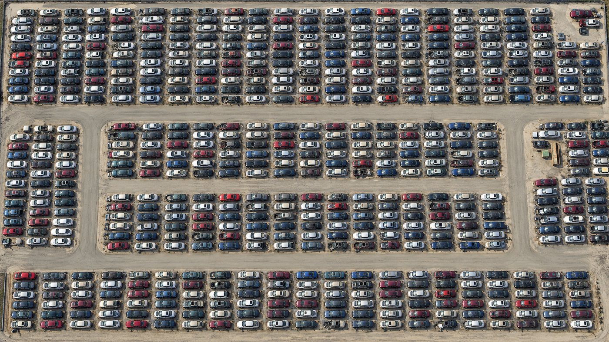
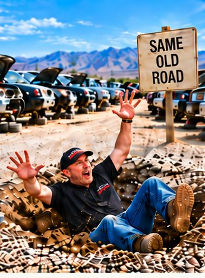
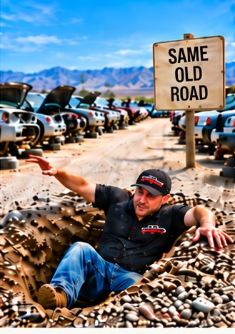
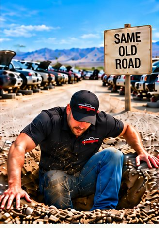
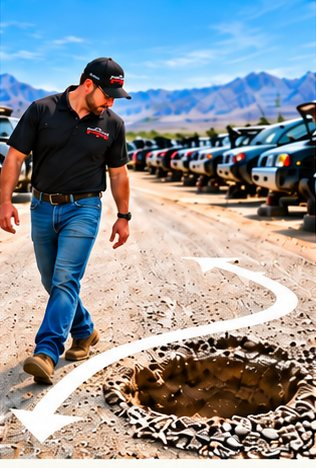

ARA 2026 Convention and Expo · Atlanta · October 16, 2026
Become the Disruptor: Rethinking Self-Service Key Metrics with AI
The one page from the hour: the prompt, the four questions, the four checks, the chain, the system, the data rule, and how this deck was built.
Part 1 of 5
Spoken, not typed. Do not ask for five KPIs. Ask it to build the prompt that interviews you, department by department, aimed at leading indicators, and tell it to push back.
Prompt
I run a self-service auto recycling yard on EOS. Our scorecards are 5 to 15 weekly measurables, one owner each. Build me a world-class prompt that gets you to interview me, department by department: car buying, towing, intake and depollution, processing, holding, the yard, commodities and crush, retail sales, and Builders. Ask me about 10 questions per department, the way a Fortune 500 operations team would, aimed at LEADING indicators: weekly activities one seat controls that predict the result. One department's leading indicator is the next one's lagging indicator. Here is our dashboard. Tell me which of these numbers lead and which lag. Then draft a scorecard for one entry-level seat and one manager seat, and push back on anything that is really a lagging number.
Anthropic's own prompting guide comes down to five parts, in yard words:
Who you are, your yard, your seat, that you run on EOS. The situation.
One clear task. "Argue against this metric," not "help with metrics."
What it may use, what it may not, what it should not assume.
Table, one page, five bullets. Say exactly what you want back.
Tell it to ask you before it answers, and to say where it could be wrong.
Then iterate. The first answer is a draft. Give it the situation, not the effort.
Template
CONTEXT: I run a self-service yard in [city], [one or two] yards, and we review numbers [weekly]. JOB: Build me a prompt that interviews me, department by department, for leading indicators. GUARDRAILS: Use only the indicator names on my dashboard. No customer or employee data. FORMAT: About 10 questions per department, then one scorecard for [a seat]. PUSH BACK: Before you answer, ask me what you need. Push back on anything that is really a mirror.
Part 2 of 5
They walk you from the number you trust to the number that predicts it. Answer them out loud with the person doing the work, not in your office.
The mirror you already trust: the result.
The activity that makes Friday good. That is your windshield candidate.
One owner, defined so two people count it the same way.
If you left for thirty days and this was all you got, would it tell you the truth?
Moves before the result, not after.
A seat owns it.
Green or red every week, no gray.
Two people would count it the same way.
Three of four is a trial measurable. Put it on the scorecard for eight weeks and find out. Perfectionism is the enemy of progress.
Monday is the windshield. Friday is the mirror. Each link's windshield is the next link's mirror. Names only, from one yard's dashboard; candidates, not answers.
MondayIncoming leads
FridayPurchase %
MondayProcessed per day
FridayCars moved to holding
Monday? the one you built in the room
FridayCustomers per car set
MondayInterchange attachment percentage
FridayParts per ticket

Customers per car set is a mirror. Set the whole yard with one wrong car, rotate it daily, hit five customers per car, and part nothing. The better question: did we set cars of value to our customer?
Part 3 of 5
A system is a situation: the same meeting, the same numbers, the same day, every week. Owner first, then AI.
A scorecard of 5 to 15 weekly numbers, one owner each. A weekly Level 10 meeting. Identify, discuss, solve (IDS) for anything off track. Quarterly Rocks. A number nobody understands is a number nobody owns, so ask the people doing the work what tells them it was a good day. Not their decision; their alignment. Start with Traction by Gino Wickman. EOS® is a trademark of EOS Worldwide; not affiliated.
The tool one yard uses to run EOS: ninety.io
Angela Duckworth's three boxes: situation, thoughts, response. The situation does most of the work. Disruptors change box one. The five chapters are Portia Nelson's, as told in the book.




1Fall in2See it, fall in3Fall in, climb out4Walk around it5A different street
How the yard works. Metric names and definitions. SOPs. Counts and totals with no names. Made-up example data.
Sales and inventory exports with customer info removed. Labor hours by seat, not by name. Scorecards with names replaced by seats. Use a business or team plan and read its data terms.
Customer names, IDs, phone numbers, payment info. Seller ID or title documents. Employee pay, SSNs, personnel files. Passwords, bank details, anything under NDA.
When in doubt, treat it as red, and follow your company's own policy.
Keep the context for one effort.
Bring in the dashboard or spreadsheet you already open every Monday (Microsoft 365, Google Drive), your meeting notes (Otter, Granola), your books (QuickBooks, Xero), and Zapier or a CSV for everything else.
One shared file of your rules, your seats and your definitions that every conversation starts from.
One person changes the brain. Everyone else sends suggestions at the end of a session.
For "I don't have access to change anything": Claude Code. You describe the tool, it writes it. Train it like a new hire.
Part 4 of 5
Replace anything in brackets. Start a new conversation for each topic and run the setup prompt first.
1 · Setup
I run [department / seat] at a self-service auto recycling yard in [city]. Customers pay admission, pull their own parts from vehicles we buy, depollute, and set in the yard. We run on EOS: weekly Scorecard, Level 10 Meeting, IDS, and quarterly Rocks. My goal this quarter is: [goal or Rock]. For this conversation, act as a skeptical operations analyst who has never worked in auto recycling and does not accept "we've always done it that way." Before you give advice, ask me up to 5 questions you need answered.
2
We track this metric: [metric], defined as [definition], reviewed [weekly / monthly] by [seat]. Argue against it. Tell me: 1. What it actually measures and what it misses. 2. What an average of this number could be hiding. 3. What decision it should drive, and whether that decision would change if the number moved. 4. What a first-principles operator from another industry would measure instead. Be direct. Do not defend the metric just because we use it.
3
Attached is [8 to 12] weeks of data: each car set, its make, model, year, set date, and the customers or parts sold from it. Names and personal info are removed. Do not give me the overall average. Instead: 1. Group the cars by make, model, and year range and show which groups draw the most customers and sales per car. 2. Show which groups we set a lot of that draw very little. 3. Tell me what this suggests about which cars we should set more of and less of. 4. Tell me how confident I should be given how much data this is. Give me a short table and 3 plain-English takeaways.
4
Here is our current weekly Scorecard: [paste measurables, owners, goals]. For each measurable, tell me: - Leading or lagging? - Can one seat control it within a week? - Would a change in it change what we do next week? Then recommend which ones to cut or replace. Finally, make the strongest case for keeping one measurable you recommended cutting, so I can decide.
5
Start from the basic truth of a self-service sale: a customer finds the part they came for, on a car that is in the yard, and leaves glad they came. Reason up from that truth. Give me 5 leading indicators for [department] that: - move before sales or car count move, - one seat can control each week, - we can measure from data we already have: [POS / yard management / payroll hours / inventory search]. For each, give a one-line definition and explain why it should lead.
6
Here are [12] weeks of two numbers: - Candidate leading indicator: [name and weekly values] - Result we care about: [name and weekly values] Does the candidate tend to move before the result? Explain in plain English, show me what you looked at, and tell me honestly how much this little data can prove. Suggest what to watch for over the next 8 weeks to confirm it.
7
Turn this into a Scorecard measurable spec: [measurable]. Fill in: definition (so two people would count it the same way), owner seat, weekly goal, data source, what counts as off track, and the first question we ask in IDS when it is off track. Flag anything vague, and ask me for anything you would have to guess.
8
Here is this week's Scorecard with goals and actuals: [paste]. Write a one-page brief for our Level 10 Meeting: 1. Which measurables are off track, and by how much. 2. For each, 2 or 3 IDS questions aimed at the root cause, not the person. 3. Any number that has been off track 3 or more weeks in a row. 4. One number that looks on track but might be misleading. Plain language. No blame.
9
Before I act on this, give me the strongest case that you are wrong. What would have to be true for this recommendation to hurt my yard?
Examples, not a finished scorecard. Question each one with the prompts above before you adopt it, and set your own goals.
| Seat | Leading measurable | Why it leads |
|---|---|---|
| Car buying | Incoming leads | Cars in the yard next month start here |
| Car buying | Demand-matched buy rate | Share of cars bought that customers are searching for |
| Production | Processed per day | A thin bay today is a thin yard in two weeks |
| Production | Cars moved to holding | What is ready to stand |
| Yard | Your Monday number for customers per car set | The one you built in the room: did we set cars of value? |
| Yard tech | Vehicles stood today, stands and signs set | Things a new hire can see at the end of a shift |
| Sales | Interchange attachment percentage | Moves parts per ticket |
| Leadership | Scorecard complete, no blank cells | If the numbers are not filled in, nothing else works |
Part 5 of 5
A team of AI agents, working from one prompt, built the deck you watched: a creative director leading fourteen specialists through ten gated steps, with the speaker interviewed at every gate. The prompt is long because a good one is.
The yard words did not work: "rows," "east to west," "18 deep," "roadway." The image model only knows what a picture looks like. The prompt that finally passed describes the frame, not the yard. Same rule as the operator prompt: give it the situation, not the effort.
Image prompt
Straight-down satellite style aerial photograph of a self-service auto salvage yard, photorealistic. Pale gray compacted gravel ground, not asphalt. Every car's long axis is horizontal in the frame, noses pointing left or right. The cars are stacked side by side, door to door, into straight vertical lines of ten to eighteen cars, no gaps. The lines sit in pairs: the two lines of a pair are back to back with their rear bumpers nearly touching, and the fronts of each pair face a narrow aisle half a car length wide. Dozens of pairs across the frame, extremely dense. Three or four large blocks of these lines are stacked top to bottom, separated by horizontal roadways about one car length wide. Hundreds of cars, one model, many faded colors. Morning sun, short shadows all pointing the same way. No people, no readable text, no logos.
Perfectionism is the enemy of progress.Credited to Winston Churchill; the idea traces to Voltaire (1770): the best is the enemy of the good.
Question every requirement.Elon Musk, step one of his algorithm, in Walter Isaacson's Elon Musk (2023).
Doing the same thing again and expecting a different result.Popularly attributed to Albert Einstein; origin unclear.
Eric Larkin, COO and co-owner
Nevada Pic A Part, Las Vegas
Change the situation, not the effort.
Become the Disruptor: Rethinking Self-Service Key Metrics with AI. ARA 2026 Convention and Expo, Atlanta, October 16, 2026. Eric Larkin, COO and co-owner, Nevada Pic A Part. The Newsweek cover shown in the session is Newsweek's, December 24, 2021, shown for commentary. Nothing on this page is legal, financial or data-protection advice; follow your own company's policy. EOS®, Level 10 Meeting™ and IDS™ are trademarks of EOS Worldwide; this session and page are not affiliated with or endorsed by EOS Worldwide. Claude is made by Anthropic.